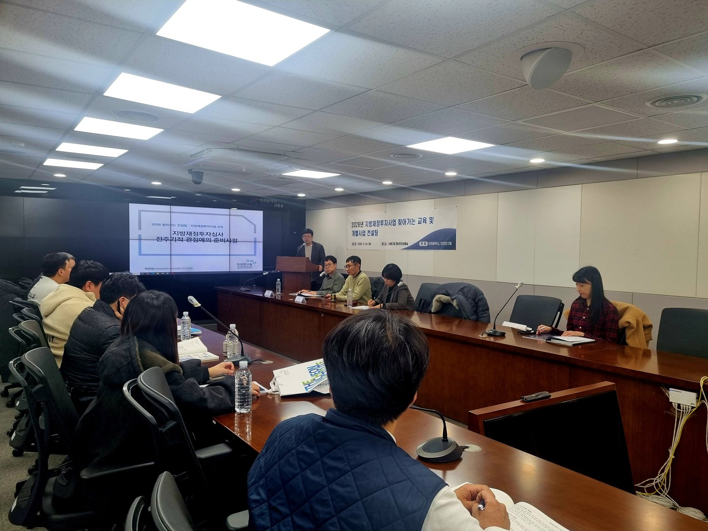
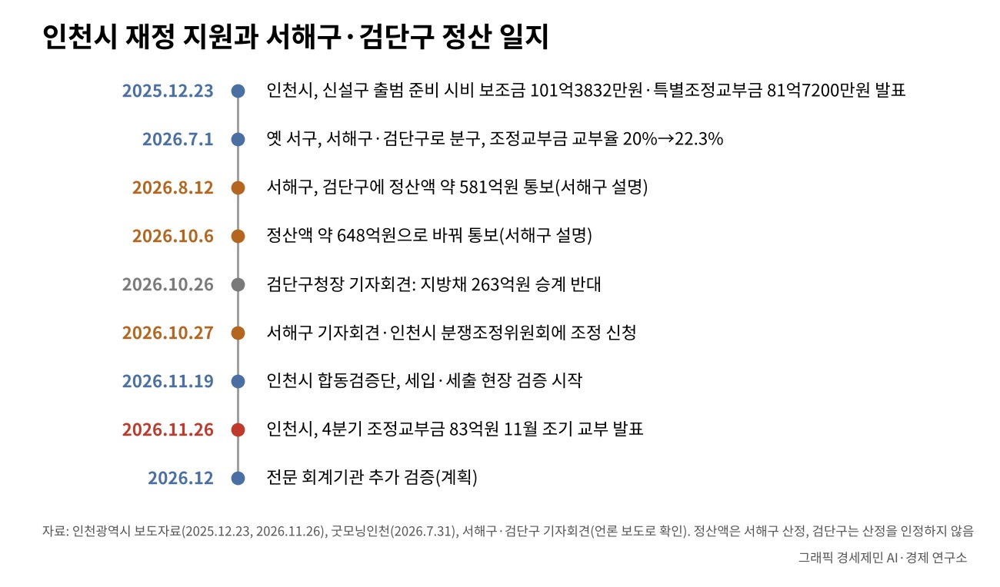
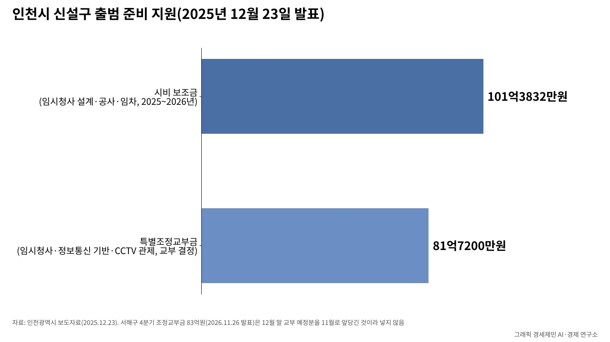

인천시, 서해구 조정교부금 83억원 11월 조기 교부
12월 말 교부 예정 4분기분 앞당김
서해구·검단구 정산, 12월 회계 검증 계획
교부율 22.3%·특별조정교부금 한시 지원
AI경제저널=김갑봉 기자 | 인천시가 12월 말 서해구에 주기로 한 4분기 조정교부금 83억원을 11월에 앞당겨 준다고 26일 밝혔다. 시 합동검증단은 서해구와 검단구가 다투는 세입·세출 정산을 11월 19일부터 현장에서 검증하고 있다.
시는 서해구가 행정체제 개편에 따른 재정 부담과 옛 서구 세입·세출 정산 지연으로 자금 운용에 어려움을 겪고 있다고 밝혔다. 서해구 연말 자금 수요와 시 자금 운용 여건을 종합해, 현행 조정교부금 제도 안에서 바로 쓸 수 있는 방안으로 조기 교부를 결정했다.
조정교부금은 광역시가 대통령령으로 정하는 보통세 수입의 일정액을 확보해 조례에 따라 자치구 간 재정력 격차를 조정하는 돈이다. 「지방재정법」 제29조의2가 정했다.


서해구 정산 요구액 약 581억원→약 648억원
옛 서구는 7월 1일 검단구와 서해구로 나뉘었다. 두 구는 나뉘기 전 올해 상반기 옛 서구 살림을 두고 다툰다. 서해구는 옛 서구가 상반기 검단 지역에 쓴 세출에서 그 지역 세입을 뺀 차액을 검단구가 돌려줘야 한다고 주장한다.
구재용 서해구청장은 10월 27일 기자회견에서 "정산이 지연되면 당장 11월 중순부터 금고가 고갈돼 필수경비 집행이 멈춘다"고 말했다. 서해구는 같은 날 인천시 분쟁조정위원회에 검단구를 상대로 조정을 신청했다고 밝혔다.
서해구 설명을 보면 검단구에 알린 정산 요구액은 8월 12일 약 581억원, 10월 6일 약 648억원이다. 서해구는 정산 기준 시점과 포함한 세입·세출 항목 범위가 바뀐 결과라고 했다. 옛 서구가 검단 신도시 기반시설을 지으려고 발행한 지방채 263억원도 검단구가 이어받아야 한다고 했다.
검단구는 서해구 산정을 믿을 수 없다고 했다. 서해구가 증빙 없이 반환 요구액을 늘렸다고 주장했다. 김진규 검단구청장은 하루 앞선 10월 26일 기자회견에서 "옛 서구 시절 누적된 재정 부담과 지방채 263억원을 신설 구에 전가하는 행위는 수용할 수 없다"고 말했다.
서해구는 10월 30일 누리집에 2027년 스포츠강좌이용권 사업(장애인 스포츠강좌이용권 포함)을 일시 중단한다고 알렸다. 공지에 적은 중단 사유는 '예산 사정'이다. 자동 신청자도 신청이 취소될 예정이고, 사업을 다시 열 때 따로 알린다고 했다.
시는 관계 부서로 합동검증단을 꾸려 서해구가 낸 자료를 검토하고 있다. 현장 검증에서는 세입·세출 항목별 산정 근거와 증빙자료를 본다. 자체 검증을 마치면 12월에 전문 회계기관에 맡겨 두 구가 내세운 정산 기준과 산정 금액이 적정한지 추가로 검증할 계획이다.
자치구 조정교부금 교부율 22.3% 인상
김범수 시 재정기획관은 "행정체제 개편에 따른 자치구의 재정 부담 완화를 위해 지난 7월 1일부터 자치구 조정교부금 교부율을 기존 20%에서 22.3%로 인상했으며, 개편 자치구의 안정적인 운영 기반 마련을 위해 초기 필수 인프라 구축에 필요한 사업비를 2028년까지 특별조정교부금으로 한시적으로 추가 지원하고 있다"고 말했다.
그는 "앞으로도 서해구의 자금 운용 상황을 면밀히 살피는 한편, 개편 자치구의 재정 여건과 수요를 종합적으로 고려해 실질적인 재정지원 방안을 지속적으로 검토해 나가겠다"고 덧붙였다.
신설구 출범 준비 지원과 설치법 재정 특례
시는 2025년 12월 23일 신설구 청사를 마련하려고 시비 보조금 101억3832만원(2025년 73억5000만원, 2026년 27억8832만원)을 편성·교부해 임시청사 설계비와 공사비, 임차료를 지원하고 있다고 밝혔다. 특별조정교부금 81억7200만원도 교부 결정해 임시청사 확보, 정보통신 기반 구축, 폐쇄회로텔레비전(CCTV) 통합관제센터 환경 개선을 지원한다고 했다. 같은 발표를 보면 옛 서구는 그해 하반기 행정안전부 특별교부세 14억원을 확보해 검단구 임시청사 내부·주차장 개선과 기록관·민원실 구축에 쓸 예정이었다.
일주일 뒤인 2025년 12월 30일 개정된 「인천광역시 제물포구ㆍ영종구 및 검단구 설치 등에 관한 법률」은 제3조에 재정지원 특례를 새로 넣었다. 국가와 인천시가 제물포구·영종구·검단구 설치에 드는 비용을 지원하며, 보조금·지방교부세·재정 투자·융자 같은 재정상 특별한 지원을 할 수 있다는 내용이다. 이 법은 2026년 7월 1일 시행됐다.

참고문헌
- 「인천시, 서해구 조정교부금 83억 원 조기 교부… 자금 운용 지원」, 인천광역시 재정담당관 보도자료, 2026.11.26. 14시 배포, https://www.incheon.go.kr/IC010205/view?repSeq=DOM_0000000016098089
- 「인천시, 신설구 사업 추진에 탄력… 서구 특별교부세 14억 확보」, 인천광역시 기획총괄과 보도자료, 2025.12.23., https://www.incheon.go.kr/IC01070105/3054983
- 「인천광역시 제물포구ㆍ영종구 및 검단구 설치 등에 관한 법률」(법률 제21247호, 2025.12.30 일부개정, 2026.7.1 시행) 제3조, 국가법령정보센터, 2026.11.26 열람, https://www.law.go.kr/법령/인천광역시제물포구·영종구및검단구설치등에관한법률
- 「지방재정법」(법률 제22083호, 2026.10.20 일부개정·시행) 제29조의2, 국가법령정보센터, 2026.11.26 열람, https://www.law.go.kr/법령/지방재정법
- 「시민리포트_행정체제 개편 — 행정체제 개편, 시민의 삶이 바뀌다」, 인천광역시 굿모닝인천(콘텐츠기획관), 2026.7.31., https://www.incheon.go.kr/goodmorning/GM040100/3083925
- 「2027년 (장애인)스포츠강좌 이용권 사업 일시 중단 안내」, 인천광역시 서해구 체육진흥팀, 서해구청 누리집 새소식 2026.10.30 게시, https://www.seohae.go.kr/open_content/main/
사진 출처
- [사진1] 인천광역시 재정담당관 보도자료 「인천시,“2026년 군․구 찾아가는 재정투자사업 교육․컨설팅”실시」 첨부 현장사진, 2026.11.24., https://www.incheon.go.kr/IC010205/view?repSeq=DOM_0000000016079964 (공공누리)
- [사진2] AI경제저널 작성 도표. 자료: 인천광역시 보도자료(2025.12.23, 2026.11.26), 굿모닝인천(2026.7.31), 서해구(2026.10.27)·검단구(2026.10.26) 기자회견(언론 보도로 확인)
- [사진3] AI경제저널 작성 도표. 자료: 인천광역시 보도자료(2025.12.23)
※ 이 기사는 인공지능기자 위민아이(Wemin_AI)와 협력해 작성했습니다.
저작권자 © AI경제저널 무단전재 및 재배포, AI학습 및 활용 금지